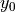
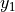
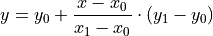
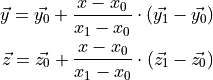
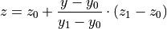
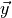

Characteristics¶
In this part we give an introduction on the TESPy characteristics
implementation. There two different types of characteristics available in
TESPy: lines (CharLine)
and maps (CharMap).
The default characteristics available are to be found in the
tespy.data module documentation.
Characteristic lines¶
The characteristic lines use linear interpolation in order to determine the
y-value given a x-value as input, where x is between the lower boundary
 and the upper boundary
and the upper boundary  .
.

and
are the corresponding y-values.
It is possible to specify an extrapolate parameter. If the value is
False (default state) and the x-value is above the maximum or below the
minimum value of the characteristic line the y-value corresponding to the the
maximum/minimum value is returned instead. If the extrapolate is
True linear extrapolation is performed using the two lower most or
upper most value pairs respectively.
Characteristic maps¶
The characteristic maps use linear interpolation as well. First step is interpolation on the x-dimension similar to the characteristic line functionality. As the y and z data are two-dimensional, each row of the data corresponds to one x value. Thus, the result of the first step is a vector for each dimension (y and z).

Using the y value as second input dimension the corresponding z values are calculated, again using linear interpolation.

Note
Using compressors map functions

and are
manipulated with by the value of the inlet guide vane angle. Also see the
corresponding methods
are
manipulated with by the value of the inlet guide vane angle. Also see the
corresponding methods
tespy.components.turbomachinery.compressor.Compressor.char_map_eta_s_func
and
tespy.components.turbomachinery.compressor.Compressor.char_map_pr_func
in the API documentation.
Import your own characteristics¶
It is possible to import your own characteristic lines or maps instead of writing the x, y (and z) data into your python script, for example:
from tespy.tools.characteristics import CharLine
from tespy.tools.characteristics import load_custom_char
from tespy.tools.characteristics import CharMap
gen_char = load_custom_char('generator', CharLine)
gen_char = load_custom_char('custom_map', CharMap)
For the imports to work in the way shown, navigate to your .tespy folder in
your HOME directory HOME/.tespy. Create a folder named data, if
it does not exist. In this folder, you can place two json-files for your
characteristics.
char_lines.jsonchar_maps.json
Your custom definitions of characteristic lines go into the
char_lines.json and your characteristic map definitions go into the
char_maps.json document.
The char_lines.json should have names for identification of the
characteristic lines on the first level. On the second level the x and y data
are assigned to the name of the characteristic line. The x and y data must be
stated as list.
{
"name_of_char_line": {
"x": [0, 0.5, 1, 1.5, 2],
"y": [0.8, 0.9, 1, 1.1, 1.2]
},
"name_of_2nd_char_line": {
"x": [0, 0.5, 1, 1.5, 2],
"y": [2, 1.1, 1, 1.2, 1.7]
},
"name_of_last_char_line": {
"x": [0, 0.5, 1, 1.5, 2],
"y": [0.8, 0.95, 1, 0.95, 0.8]
}
}
The char_maps.json should also have names for identification of the
characteristic lines on the first level. On the second level we additionally
need z data. The x data are a list of values, the y and z data are arrays with
a list of values for each dimension of the x data. The example below has 3 x
values, thus the y and z data must contain 3 sets of values.
{
"name_of_char_map": {
"x": [0.971, 1, 1.029],
"y": [[0.93, 0.943, 0.953, 0.961, 0.962, 0.963],
[0.987, 0.995, 1.0, 1.002, 1.005, 1.005],
[1.02, 1.023, 1.026,1.028, 1.03, 1.032]],
"z": [[0.982, 0.939, 0.895, 0.851, 0.806, 0.762],
[1.102, 1.052, 1.0, 0.951, 0.9, 0.85],
[1.213, 1.149, 1.085, 1.022, 0.958, 0.894]]
}
}